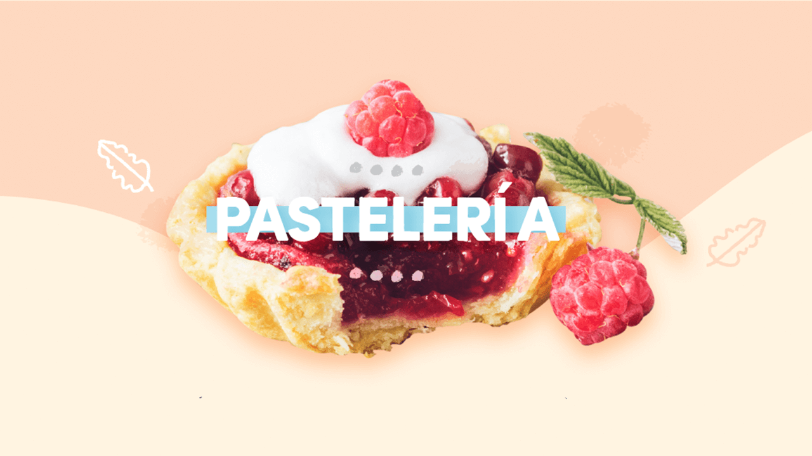
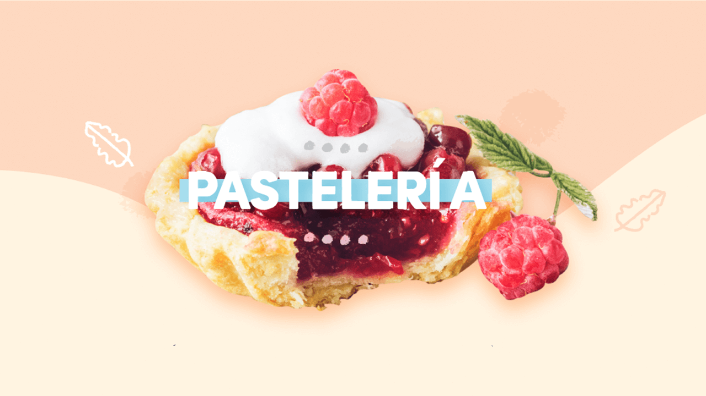

Chorizos a la pomarola

Ingredientes
- 6 chorizos de cerdo.
- 2 cebollas moradas cortadas en aros.
- Un pimiento rojo.
- Un pimiento amarillo.
- Un pimiento verde.
- 2 dientes de ajo picados y reservados en aceite.
- Una copa de vino tinto.
- 2 tazas de salsa de tomates.
- Aceite de oliva.
- Pimienta negra.
- Sal entrefina.
- Pan.
- 2 ramitas de romero fresco.
- Orégano seco.
- Dientes de ajo enteros.
Procedimiento
- Pinchar los chorizos con ayuda de un cuchillo y cocinar en la parrilla.
- En un disco con aceite de oliva, cocinar las cebollas y los pimientos cortados en aros.
- Agregar los ajos picados. Salpimentar.
- Agregar el vino y dejar evaporar el exceso de alcohol.
- Agregar los chorizos en trozos. Verter la salsa de tomates y cocinar a fuego suave.
- Rociar con aceite de oliva una plancha bien caliente.
- Tostar los dientes de ajo y agregar el romero.
- Cortar el pan en mitades, rociar con aceite de oliva, condimentar con orégano seco y tostar.
- Servir los chorizos a la pomarola sobre el pan tostado.

 
